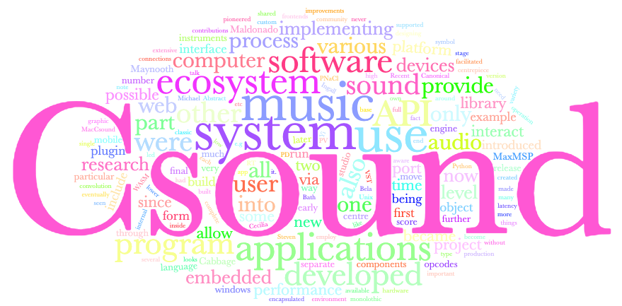

Csound + _
Notes on an Ecosystem
Victor Lazzarini
Part One
Background
Csound was first released in 1986 as a C-language port of Music 11, running originally on Unix. Its user interface consisted of a command that invoked the system on a pair of input text files, the orchestra and the score, producing a soundfile.
Since then, Csound has become the centre of a remarkable sound and music computing ecosystem.
In The Beginning
Music 11 ⟶ a small software ecosystem based on Unix.
Music 11 components (Vercoe 1983).
Music 11 was based on modular set of software components interacting with lab peripherals and devices. Much of this became encapsulated inside Csound as some of the separate pieces were rewritten as C routines in a monolothic program.
Early Csound
Csound: centrepiece of a music research ecosystem.
New experimental ports, implementations (transputers, DSPs), opcodes.
Classic examples ⟶ PV (Dan Ellis) and FOF (Michael Clarke)
Score processor programs, Cscore, MIDI and RT audio.
Cecilia (Jean Piché) ⟶ interactive GUI frontend, on UNIX.
Forks and Canonical Csound
1996-2003: forks, custom versions.
DirectCsound (Gabriel Maldonado) ⟶ widget opcodes, on Windows.
MacCsound (Matt Ingalls) ⟶ libcsound ⟶ MaxMSP external, on MacOS
Canonical Csound (John ffitch, Bath).
Csound 5 and the API
Csound 4.21: API introduced.
Monolithic Csound to libcsound ⟶ lots of issues, complete hack.
Library not re-entrant ⟶ only one Csound in each process.
Csound 5: complete system re-engineering ⟶ encapsulated into a re-entrant Csound class; unified earlier forks.
The C/C++ API: extensive manipulation of engine operation ⟶ full embedding into applications.
Interfaces:
Tcl/Tk ⟶ new Cecilia
Java ⟶
Blue (Steven Yi)
Python
Frontends:
QuteCsound (Andrés Cabrera)
Cabbage (Rory Walsh)
externals for Pd and MaxMSP
ports to mobile devices
Csound 6
2013: API updated, new parser & compiler, language improvements, RT mode, sample-level accuracy, various other internal changes.
Csound ⟶ centre of an ecosystem in platforms from embedded devices to mobile to desktop to the web through to supercomputers.
Csound is now best described as a sound and music computing system, used in the composition and performance of electronic music, research, teaching, and general audio/music applications.
Part Two
The Ecosystem
System Levels
Languages
Research
Csound ⟶ fully-featured research platform
At Maynooth, it is our fundamental environment for prototyping, implementation, and deployment for all our research in sound and music computing.
HID protocol interaction
Damien McEvoy (MA, 2018) demonstrating interactive HID devices.
Parallel tvconv
RT ratios: Solid (original), Dashes (parallel, GPU), Dots (parallel, CPU), for various partition sizes and convolution lengths.
A short improvisation using parallel cltvconv for voice and drums.
instr 2
out(cltvconv(inch(1),
diskin:a("beats.wav", 1, 0, 1),
1, 1, 8192, filelen("beats.wav")*sr,1))
endin
Embedded systems
Sound synthesis engine for embedded devices: Raspberry PI, Intel Galileo and Edison, and other devices ⟶ Csound in embedded applications, eurorack modules, stomp boxes, etc.
Csound on the Galileo
Csound on the Edison
The QuBit Nebulae Eurorack module
BelaCsound: Csound on a hard RT interactive platform
Csound on ELK
Csound is being incorporated into ELK, opening it up for application in music devices and instruments.
Based on VST plugins created with Cabbage ⟶ Csound as the underlying sound engine.
WebAudio Csound
2014: Csound available Web platform ⟶ PNaCl and Web Audio API
2017: WASM introduced
2018: Audio Worklet API ⟶ better performance and lower latency
Web Audio Csound Examples
WebAudio Csound is used widely.
The WebIDE project (Steven Yi, Ed Costello, Hloðver Sigurdsson) looks very promising in delivering a complete IDE for Csound on the web platform.
Music Applications
We have been listening to Csound-made music since 1986, the primary target of the system is music-making.

Csound is now embedded in the computer production studio, thanks largely to Cabbage, which simplified plugin development.
There are many Csound users now who are not at all aware of it. It's just another VST that they are running.
Part Three
Where to now?
Csound 7
Improved System
- new language facilities
- expanded API
- review of internals
- UDO to binary
Transpiling Example
Increased Connectivity
- more ports
- more embedding
- light versions
- modular components
Increased Participation
- more third-party projects
- package system
- more sys developers
- better sys documentation